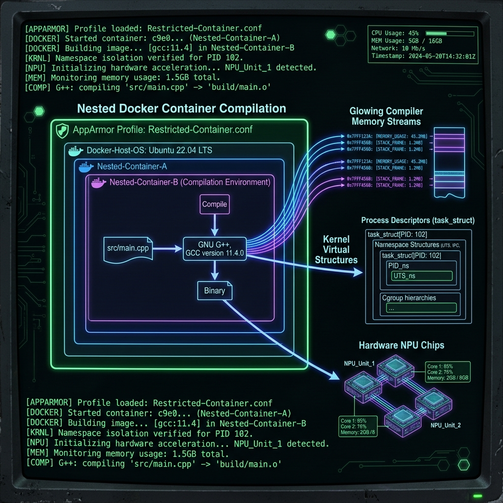

The NPU Journey Part 3: Night Shift Compilation Breakthroughs (AppArmor, LXC Ghost Memory)

Getting pre-compiled AX650 graphs running on the AX8850 was a solid first win (documented in Part 2). But relying on pre-compiled files is a dependency bottleneck. If you want to use customized local intelligence pipelines, you need to compile your own weights.
To achieve this, we set up a dedicated compilation node inside Proxmox (LXC 205) running Debian 12 with 32GB of allocated RAM. We wanted to build a clean queue of community-quantized models.
What followed was a late-night battle against nested container virtualization blocks, silent AppArmor hangs, and a highly frustrating virtualized memory leak. Here is the engineering autopsy of how we solved these blocks to achieve full compiler independence.
1. Bypassing the AppArmor Confinement Trap
The Axera pulsar2 compiler runs inside a vendor-provided Docker container. Running Docker inside a Proxmox LXC container requires nesting enabled (nesting=1 in the container configuration).
When we started the compilation container, the process would spin up, load the initial model shards, analyze the tensor layouts, and then hang indefinitely at a random percentage. There was no error message, no output, and zero CPU usage. The compiler just stopped.
We traced this to nested AppArmor confinement.
When you launch a Docker container inside an LXC container, Docker attempts to apply its default AppArmor profile to the child container. However, the host Proxmox kernel has already applied the LXC AppArmor profile to the parent container. When the nested compiler tries to request system namespace operations for multi-threaded graph compilation, the AppArmor policies clash. The syscall is silently blocked, freezing the thread.
The solution is to disable AppArmor confinement for the compilation container:
# Run the compiler container with unconfined AppArmor permissions
docker run -it --rm \
--security-opt apparmor=unconfined \
-v /opt/axera/models:/data \
axera/pulsar2:latest \
llm_build --model_path /data/Qwen2.5-Coder-7B-Instruct-GPTQ-Int4 --kv_cache_len 1024
This bypass grants the compiler the raw access it needs to structure the model graph. Since the compiler container is ephemeral and shut down immediately after compilation, the security risk to the host is fully mitigated.
2. Solving the Ghost Memory Trap
During our batch compilation sprint, we encountered a strange memory failure. We compiled Qwen 2.5 1.5B successfully. Immediately afterward, in the same shell session, we attempted to compile Llama 3.2 1B.
The compiler crashed instantly with an Out of Memory (OOM) error.
This made no logical sense. A 1B parameter model has less weight data and requires a smaller compiler footprint than a 1.5B model. The LXC container dashboard showed plenty of free RAM, but the compiler container insisted the system was out of memory.
We discovered that compiling a model leaves residual memory allocations pinned in the host cgroups. Docker fails to properly clean up and reclaim these pages between container runs. From the host's perspective, the memory is free, but the virtualization layer thinks the pages are still dirty, preventing the next compiler run from accessing the physical RAM.
We call this the Ghost Memory Trap.
To reclaim the pinned pages and clear the virtualized memory tables, you must reboot the parent LXC compiler container between runs:
# Reboot the compiler node on the Proxmox host
pct reboot 205
Always reboot the compiler container before starting a new model compilation. Do not trust the reported memory limits if a previous run has occurred in the same session. After adding this reboot rule to our pipeline, Llama 1B compiled flawlessly.
3. The 32GB RAM Ceiling is a Myth
Initial community reports suggested that compiling 7B or 8B parameter models required massive, workstation-class RAM setups (often 64GB or more).
Our night-shift testing proved this wrong.
By keeping the key-value cache length constrained (--kv_cache_len 1024) and enforcing a clean LXC reboot, we successfully compiled Qwen 2.5 Coder 7B and Llama 3 8B Abliterated v3 inside our 32GB RAM envelope. You do not need massive hardware to compile the 7B/8B class, you just need clean memory management.
4. The Batch Queue Compilation Ledger
Here is the complete ledger of our night shift compilation runs. We tested six different models to establish the limits of the compiler:
| Model | Parameters | Quantization | Status | Notes / Root Cause |
|---|---|---|---|---|
| Qwen 2.5 1.5B Instruct | 1.5B | GPTQ-Int4 | ✅ SUCCESS | Compiled cleanly on first try. |
| Llama 3.2 1B Instruct | 1B | None | ✅ SUCCESS | Succeeded after clean LXC reboot. |
| Qwen 2.5 Coder 3B | 3B | GPTQ-Int4 | ✅ SUCCESS | Compiled natively. |
| Dolphin 3.0 Qwen 2.5 3B | 3B | GPTQ | ❌ FAILED | KeyError: 'group_size' (Upstream metadata format error, not hardware limit). |
| Qwen 2.5 Coder 7B | 7B | GPTQ-Int4 | ✅ SUCCESS | Compiled cleanly inside the 32GB envelope. |
| Llama 3 8B Abliterated v3 | 8B | GPTQ | ✅ SUCCESS | Compiled successfully. Previous Llama 3 failures were due to repo-specific format errors. |
Note on Dolphin 3.0: The compilation failed because of a missing metadata field in the publisher's HuggingFace repository, not due to hardware constraints. The Pulsar2 python compiler backend expects strict GPTQ formatting and crashes if the group_size metadata key is absent.
5. Preparing the Uncompiled Assets: Embedding Extraction
Compiling the attention and feedforward layers into .axmodel chunks is only half the compilation task. The pulsar2 compiler does not compile the input token embedding layer.
The NPU runtime memory-maps this file directly into SRAM. Any other datatype, or any standard PyTorch tensor header, will trigger a segmentation fault or cause the model to output garbage text. We must extract the embedding matrix from the source .safetensors files, cast it to raw bfloat16, and write it as a raw binary file (model.embed_tokens.weight.bfloat16.bin).
Here is the helper script we use to extract this matrix:
import torch
import json
import os
from safetensors.torch import load_file
def extract_embeddings(model_dir, output_path):
# Find weight map in index
index_path = os.path.join(model_dir, "model.safetensors.index.json")
if os.path.exists(index_path):
with open(index_path) as f:
index = json.load(f)
shard = index["weight_map"]["model.embed_tokens.weight"]
shard_path = os.path.join(model_dir, shard)
else:
shard_path = os.path.join(model_dir, "model.safetensors")
print(f"Loading weights from {shard_path}...")
shard = load_file(shard_path)
embed = shard["model.embed_tokens.weight"]
# Cast to raw bfloat16 for NPU memory-map consumption
embed_bf16 = embed.to(torch.bfloat16).contiguous()
with open(output_path, "wb") as f:
f.write(embed_bf16.numpy().tobytes())
print(f"Extraction successful: {output_path}")
Once the binary matrix is extracted and copied to the compiled model directory, the runtime is ready to map the tokens.
Now that we have compiled our models into .axmodel graphs and extracted the embedding files, we need to load them onto our inference node. In Part 4, we address the final hurdles of runtime deployment: strict JSON formatting, CMM boot windows, and setting up LiteLLM routing.
The NPU Journey Series
- Part 1: Taming the Axera AX8850 (And Why We Reverse-Engineered Everything for Nothing)
- Part 2: The True Guide to Deploying LLMs on the Axera AX8850
- Part 3: Night Shift Compilation Breakthroughs (AppArmor, LXC Ghost Memory)
- Part 4: Conquering the Final Boss (Strict JSONs, CMM Boot Windows, and Gateways)